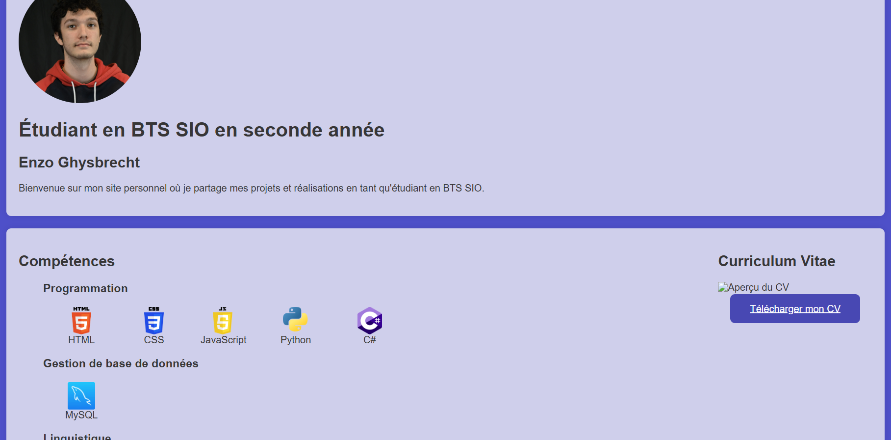
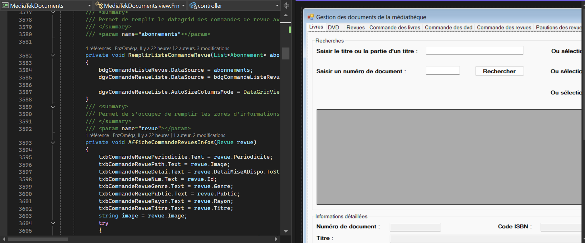
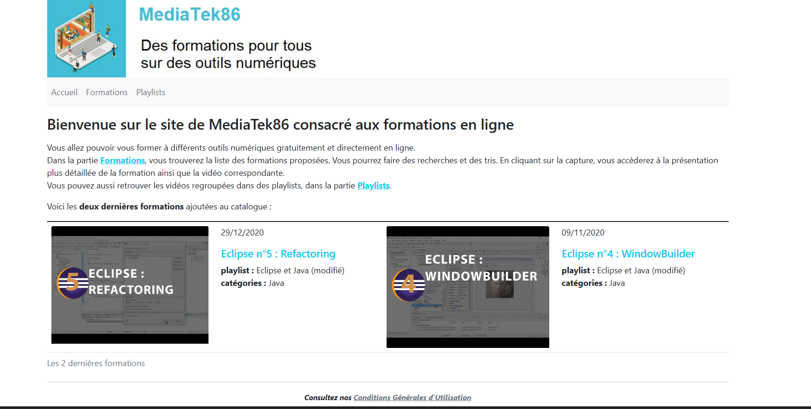
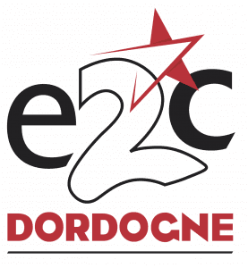

Projets personnels :

Projets académiques :


Projets de stage :





Projet personnel réalisé durant mon BTS SIO afin de disposer d’un support de présentation professionnel pour mes stages et poursuites d’études.
Page d’accueil du site
Stage de 5 semaines réalisé en entreprise dans le cadre de ma formation BTS SIO.
Stage de 5 semaines réalisé en entreprise dans le cadre de ma formation BTS SIO.
Parmi les marchés gagnés récemment par ITS 86, on trouve celui de la gestion du parc informatique du réseau des médiathèques de la Vienne, MediaTek86, ainsi que l'informatisation de plusieurs activités internes des médiathèques ou en lien avec le public. Les médiathèques mettent à la disposition de leurs adhérents des documents sur divers supports (papier, cédérom, livre numérique, DVD, etc.). Dans chacun des lieux, les documents proposés s'adressent aussi bien à un public adulte qu'à un jeune public.
Certains documents sont uniquement consultables sur place : c’est le cas des revues ou journaux (support papier), des logiciels éducatifs ou de jeux (support cédérom). Les livres peuvent être empruntés sous certaines conditions.
Dans chaque médiathèque, il existe plusieurs types d’employés : ceux du service Administratif qui gèrent les achats de livres, de matériel divers, ceux du service Médiation culturelle qui organisent les expositions, les campagnes d’information et de communication sur les activités de la médiathèque, et enfin les employés du service Prêt qui s’occupent du prêt, du rangement dans les rayons, de l’étiquetage des documents.
Le réseau des médiathèques de la Vienne, MediaTek86 a pour rôle de fédérer les prêts de livres, DVD et CD et de développer la médiathèque numérique pour l’ensemble des médiathèques du département.
Afin de donner plus d’attractivité aux médiathèques, MediaTek86 veut se développer selon deux axes :
enrichir ses services en offrant aux adhérents la possibilité d’emprunter des films en VOD ;
proposer, en complément de l’activité principale de la médiathèque, des formations aux outils numériques et des autoformations en ligne.
MediaTek86 gère le portail web unique, un véritable catalogue en ligne qui permet aux adhérents de réserver et d’emprunter plus de 200 000 documents (livres, journaux, CD, DVD, jeux), revues (400 titres de périodiques en ligne) et ressources numériques répartis dans différents lieux. MediaTek86 est un réseau qui regroupe les responsables de chaque médiathèque, un chef de projet numérique, une chargée de communication numérique et un infographiste. Les projets numériques sont pilotés par le chef de projet numérique qui est chargé de la maîtrise d’ouvrage (MOA) auprès des ESN auxquelles MediaTek86 fait appel pour la gestion du parc informatique des médiathèques, l’infogérance de son infrastructure système et réseau hébergée dans le cloud et le développement de son portail web et de ses applications internes.
Parmi les marchés gagnés récemment par ITS 86, on trouve celui de la gestion du parc informatique du réseau des médiathèques de la Vienne, MediaTek86, ainsi que l'informatisation de plusieurs activités internes des médiathèques ou en lien avec le public. Les médiathèques mettent à la disposition de leurs adhérents des documents sur divers supports (papier, cédérom, livre numérique, DVD, etc.). Dans chacun des lieux, les documents proposés s'adressent aussi bien à un public adulte qu'à un jeune public.
Certains documents sont uniquement consultables sur place : c’est le cas des revues ou journaux (support papier), des logiciels éducatifs ou de jeux (support cédérom). Les livres peuvent être empruntés sous certaines conditions.
Dans chaque médiathèque, il existe plusieurs types d’employés : ceux du service Administratif qui gèrent les achats de livres, de matériel divers, ceux du service Médiation culturelle qui organisent les expositions, les campagnes d’information et de communication sur les activités de la médiathèque, et enfin les employés du service Prêt qui s’occupent du prêt, du rangement dans les rayons, de l’étiquetage des documents.
Le réseau des médiathèques de la Vienne, MediaTek86 a pour rôle de fédérer les prêts de livres, DVD et CD et de développer la médiathèque numérique pour l’ensemble des médiathèques du département.
Afin de donner plus d’attractivité aux médiathèques, MediaTek86 veut se développer selon deux axes :
enrichir ses services en offrant aux adhérents la possibilité d’emprunter des films en VOD ;
proposer, en complément de l’activité principale de la médiathèque, des formations aux outils numériques et des autoformations en ligne.
MediaTek86 gère le portail web unique, un véritable catalogue en ligne qui permet aux adhérents de réserver et d’emprunter plus de 200 000 documents (livres, journaux, CD, DVD, jeux), revues (400 titres de périodiques en ligne) et ressources numériques répartis dans différents lieux. MediaTek86 est un réseau qui regroupe les responsables de chaque médiathèque, un chef de projet numérique, une chargée de communication numérique et un infographiste. Les projets numériques sont pilotés par le chef de projet numérique qui est chargé de la maîtrise d’ouvrage (MOA) auprès des ESN auxquelles MediaTek86 fait appel pour la gestion du parc informatique des médiathèques, l’infogérance de son infrastructure système et réseau hébergée dans le cloud et le développement de son portail web et de ses applications internes.